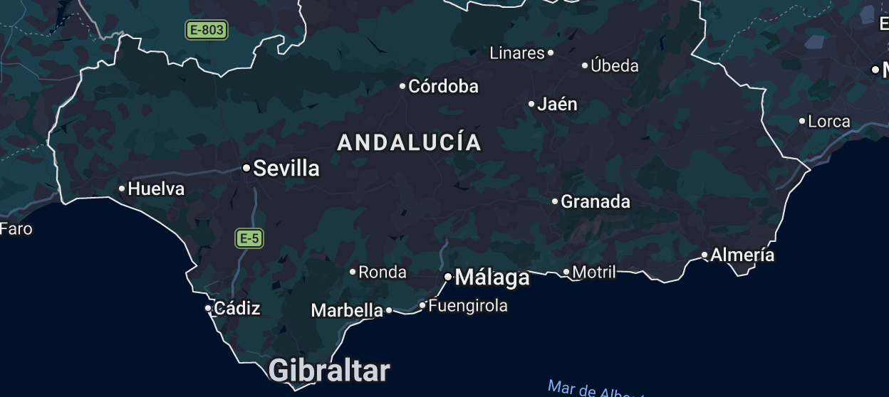

Cambios en el Grupo del Xerez

Foto: PuroXerecismoLa RFEF ha resuelto finalmente la reconfiguración de la Segunda Federación derivada del culebrón del Unión Malacitano, y el Grupo 4 en el que milita el Xerez CD cambia de fisonomía a apenas tres semanas del inicio liguero. El movimiento es doble: el Atlético Paso, el club palmero que llevaba meses instalado en el grupo andaluz-canario-extremeño, sale rumbo al Grupo 5, mientras que el Salerm Puente Genil entra por la puerta grande tras el fallo que dejó al proyecto malagueño sin plaza en la categoría.
De esta forma, la Federación opta por primar el criterio de proximidad geográfica que el propio club cordobés había reclamado en las últimas semanas, en detrimento de una salida que hasta ahora parecía más plausible, la de un desplazamiento de equipos extremeños hacia el Grupo 5. El resultado es que el Xerez CD estrena rival de la comarca cordobesa y pierde, tras solo una temporada de convivencia, al conjunto de La Palma como oponente.
Un grupo que se reordena a las puertas de la competición
El cambio llega en un momento delicado del calendario, con la pretemporada ya en marcha y el debut liguero fijado para el 6 de septiembre. El Xerez CD, que ya conocía su calendario desde finales de junio con el Atlético Paso todavía como rival, tendrá que asumir la modificación de fixture que trae consigo la entrada del Puente Genil en sustitución del equipo canario.
Para la afición xerecista, el Puente Genil no es un desconocido: ambos equipos ya compartieron grupo la pasada temporada, con encuentros disputados tanto en Chapín como en el Municipal de Puente Genil. Su regreso al Grupo 4 recompone, en la práctica, un duelo andaluz que había desaparecido del calendario tras el descenso pontano.
El adiós del Atlético Paso, que apenas había estrenado esta temporada su presencia en el grupo andaluz tras ascender de Tercera Federación, se explica por la propia lógica territorial que la RFEF ha querido aplicar en esta reconfiguración: con la incorporación de un equipo cordobés al Grupo 4, la Federación ha preferido reequilibrar el bloque canario reduciendo su peso en un grupo ya de por sí exigente en desplazamientos, y reubicar al conjunto palmero en el Grupo 5.
La resolución pone fin a semanas de incertidumbre sobre la composición definitiva de la categoría, abierta desde que el Comité de Competición rechazara la inscripción del Unión Malacitano y reconociera al Puente Genil, como mejor clasificado de los descendidos del Grupo 4, el derecho a recuperar la plaza. Ahora, con el nuevo mapa ya cerrado, el Xerez CD afronta la recta final de la pretemporada con un rival más, y otro menos, sobre el papel.
← Volver a la portada